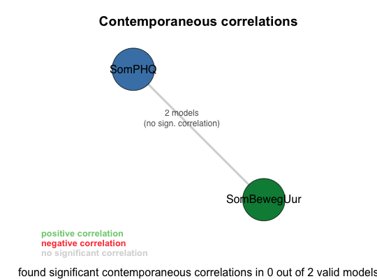
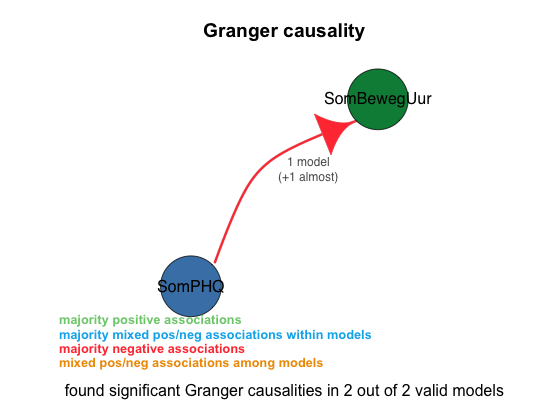

print_best_models(av_state)
av_state that was the result of a call to var_mainThis functions uses log transformation (logm).If logm is true it gives the best log-transformed model. And if the logm is false it gives the best model without log-transform. The best model is the measured with the lowest AIC+BIC value.
av_state <- load_file("../data/input/pp5 nieuw compleet.sav",log_level=3) av_state <- var_main(av_state,c('SomBewegUur','SomPHQ'),criterion="BIC",log_level=3)==================== var_main(av_state, vars = c("SomBewegUur", "SomPHQ"), log_level = 3, criterion = "BIC", numcores = 8L) Starting VAR (using 8 cores) with variables: SomBewegUur, SomPHQ ==================== Done. Processed 9 distinct models, of which 2 were valid. Tested 18 of 72 ( 25.00%) of the combinatorial search space at the given lags (1, 2).
Granger causality legend: + majority positive associations ~ majority mixed pos/neg associations within models - majority negative associations # mixed pos/neg associations among models Granger causality summary of all 8 unrestricted models: 100.00% SomPHQ -Granger causes- SomBewegUur (3 models +5 almost) (sign: 1 ~, 7 -) Granger causality summary of all 2 valid models: 100.00% SomPHQ -Granger causes- SomBewegUur (1 model +1 almost) (sign: 2 -) Granger causality summary of all 1 valid unrestricted models: 100.00% SomPHQ -Granger causes- SomBewegUur (1 almost) (sign: 1 -)
Summary of all valid models: lag: 100.00% 1 (2 models) apply_log_transform: 100.00% TRUE (2 models) The valid models (sorted by BIC score): A: (AIC: 386.23 (orig: 45.718), BIC: 398.593 (orig: 58.081)) : SomPHQ -Granger causes- SomBewegUur (0.0417) Lag: 1 Log transform: YES Exogenous variables: SomPHQ outliers (3.5x std. of res.): 27 Constraints: [lnSomBewegUur]lnSomBewegUur.l1 = 0 [lnSomPHQ]lnSomBewegUur.l1 = 0 Resulting Formulas: lnSomBewegUur = lnSomPHQ.l1 + const + SomPHQ_outliers lnSomPHQ = lnSomPHQ.l1 + const + SomPHQ_outliers B: (AIC: 388.391 (orig: 47.879), BIC: 404.875 (orig: 64.363)) : SomPHQ almost -Granger causes- SomBewegUur (0.0726) Lag: 1 Log transform: YES Exogenous variables: SomPHQ outliers (3.5x std. of res.): 27 Constraints: none# av_state is the result of a call to var_main print_best_models(av_state)----------------------------------------------------- Details for the best log-transformed model (model A): ----------------------------------------------------- VAR Estimation Results: ========================= Endogenous variables: lnSomBewegUur, lnSomPHQ Deterministic variables: const Sample size: 58 Log Likelihood: -16.859 Roots of the characteristic polynomial: 0.5681 0 Call: VAR(y = data, p = lag, exogen = ..1) Estimation results for equation lnSomBewegUur: ============================================== lnSomBewegUur = lnSomPHQ.l1 + const + SomPHQ_outliers Estimate Std. Error t value Pr(>|t|) lnSomPHQ.l1 -0.3806 0.1869 -2.037 0.0465 * const 1.7680 0.3473 5.090 4.49e-06 *** SomPHQ_outliers -1.0274 0.4137 -2.484 0.0161 * --- Signif. codes: '***' <=0.001, '**' <=0.01, '*' <=0.05, '.' <=0.10 Residual standard error: 0.4096 on 55 degrees of freedom Multiple R-Squared: 0.1647, Adjusted R-squared: 0.1343 F-statistic: 5.423 on 2 and 55 DF, p-value: 0.007087 Estimation results for equation lnSomPHQ: ========================================= lnSomPHQ = lnSomPHQ.l1 + const + SomPHQ_outliers Estimate Std. Error t value Pr(>|t|) lnSomPHQ.l1 0.56815 0.09335 6.086 1.17e-07 *** const 0.78666 0.17354 4.533 3.18e-05 *** SomPHQ_outliers 0.81583 0.20668 3.947 0.000227 *** --- Signif. codes: '***' <=0.001, '**' <=0.01, '*' <=0.05, '.' <=0.10 Residual standard error: 0.2046 on 55 degrees of freedom Multiple R-Squared: 0.5006, Adjusted R-squared: 0.4825 F-statistic: 27.57 on 2 and 55 DF, p-value: 5.089e-09 Covariance matrix of residuals: lnSomBewegUur lnSomPHQ lnSomBewegUur 0.17088 -0.01468 lnSomPHQ -0.01468 0.04265 Correlation matrix of residuals: lnSomBewegUur lnSomPHQ lnSomBewegUur 1.0000 NA p 0.0000 NA lnSomPHQ -0.1720 1 p 0.1968 0 Eigenvalue stability condition Eigenvalue Modulus 1 0.5681465 0.5681465 2 0.0000000 0.0000000 PASS: All the eigen values lie in the unit circle. VAR satisfies stability condition. Portmanteau tests for white noise lnSomBewegUur: Portmanteau (Q) statistic = 27.59799 Prob > chi2(27) = 0.4319169 lnSomBewegUur squared: Portmanteau (Q) statistic = 28.89861 Prob > chi2(27) = 0.3658326 lnSomPHQ: Portmanteau (Q) statistic = 19.45961 Prob > chi2(27) = 0.8526515 lnSomPHQ squared: Portmanteau (Q) statistic = 20.64334 Prob > chi2(27) = 0.8027036 PASS: There is no autocorrelation in the residuals. Jarque-Bera, Skewness, and Kurtosis tests Jarque-Bera test: chi2 df P lnSomBewegUur 2.0567114 2 0.3575945 lnSomPHQ 0.4665018 2 0.7919548 ALL 2.5232132 4 0.6404840 Skewness test: Skewness chi2 df P lnSomBewegUur -0.2611234 0.6591260 1 0.4168687 lnSomPHQ -0.1690553 0.2762703 1 0.5991563 ALL NA 0.9353963 2 0.6264426 Kurtosis test: Kurtosis chi2 df P lnSomBewegUur 2.239532 1.3975854 1 0.2371283 lnSomPHQ 2.719435 0.1902316 1 0.6627240 ALL NA 1.5878169 2 0.4520744 PASS: Unable to reject null hypothesis that residuals are normally distributed. Skewness and Kurtosis tests (sktest) Obs Pr_Skewness Pr_Kurtosis adj_chi2 P lnSomBewegUur 58 0.3392378 0.4748297 1.4823246 0.4765597 lnSomPHQ 58 0.5328916 0.6598384 0.5969807 0.7419375 PASS: Unable to reject null hypothesis that residuals are normally distributed. Granger causality Wald tests Equation Excluded sign chi2 df P 1 lnSomBewegUur lnSomPHQ - 4.148853 1 0.04166273 Vargranger causes: SomPHQ -Granger causes- SomBewegUur (0.0417) estat ic Obs ll df AIC BIC orig_AIC orig_BIC 1 58 -187.1152 6 386.2303 398.593 45.71836 58.08102